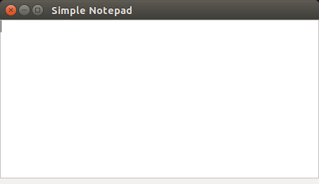
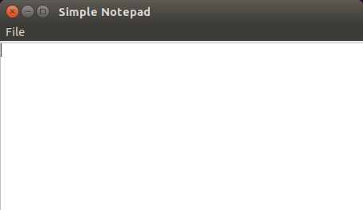
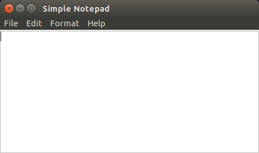

Since now we saw two different controls: labels and buttons. Labels can show text or images to the user but are not designed for interaction. Buttons allow the user to trigger an event by pressing a mouse button. But none allow the user to insert any data into our application. To do that we will use a new control called IupText. It creates an editable text field and has a lot of different attributes available. We will be interested in one in particular for now: MULTILINE. MULTILINE turns the IupText into an editable text field that supports many lines which is mandatory to build a simple notepad.
Our starting code for the simple notepad should be as following...
Download source from: example6.c
#include <stdlib.h>
#include <iup.h>
int main(int argc, char **argv)
{
Ihandle *dlg, *multitext, *vbox;
IupOpen(&argc, &argv);
multitext = IupText(NULL);
vbox = IupVbox(
multitext,
NULL);
IupSetAttribute(multitext, "MULTILINE", "YES");
IupSetAttribute(multitext, "EXPAND", "YES");
dlg = IupDialog(vbox);
IupSetAttribute(dlg, "TITLE", "Simple Notepad");
IupSetAttribute(dlg, "SIZE", "QUARTERxQUARTER");
IupShowXY(dlg, IUP_CENTER, IUP_CENTER);
IupSetAttribute(dlg, "USERSIZE", NULL);
IupMainLoop();
IupClose();
return EXIT_SUCCESS;
}

The previous code doesn't show exciting news except by the IupText declaration and the call to IupSetAttribute to set the IupText as a MULTILINE. The default value is "NO", try to comment this line and see what happens.
Notice that the SIZE attribute of the dialog was also set. Because the IupText is a control that does not fit its size to its contents we have to set an initial size for the dialog, or else the result would be a very small dialog. We use a simple size specification that is a quarter of the screen size in both dimensions. The SIZE attribute will also work as a minimum size, so we reset the USERSIZE attribute after the dialog is show to avoid this limitation. Experiment to comment this line and check how the dialog interactive resize behaves.
With a few lines of code we build an application where the user can type a huge text. But, if you type a huge text, you probably would like to save it and unfortunately our applications offers no such feature. We will handle this in the next sections.
Almost all applications offer a menu where the user can load files, save files, use the clipboard and do a lot of other stuff with his data. IUP also offers this resource to the applications. Menus are divided into four different interface elements: IupItem, IupMenu, IupSeparator, IupSubmenu.
IupItem creates an single item of the menu interface element. When selected, it generates an action.
IupSeparator creates an horizontal line that will appear between two menu items. Its used normally to divide and arrange different groups of menu items.
IupSubmenu creates an item that, when selected, opens another menu.
IupMenu creates the menu element by itself as a list of elements. An IupMenu can include any number of the other 3 types of menu interface elements: IupItem, IupSubmenu and IupSeparator. Any other type of interface element inserted in a menu will be an error.
Let's add a menu with a few items in our example:
Download source from: example7.c
#include <stdlib.h>
#include <iup.h>
int exit_cb(void)
{
return IUP_CLOSE;
}
int main(int argc, char **argv)
{
Ihandle *dlg, *multitext, *vbox;
Ihandle *file_menu, *item_exit, *item_open, *item_save;
Ihandle *sub1_menu, *menu;
IupOpen(&argc, &argv);
multitext = IupText(NULL);
IupSetAttribute(multitext, "MULTILINE", "YES");
IupSetAttribute(multitext, "EXPAND", "YES");
item_open = IupItem ("Open", NULL);
item_save = IupItem ("Save", NULL);
item_exit = IupItem ("Exit", NULL);
IupSetCallback(item_exit, "ACTION", (Icallback)exit_cb);
file_menu = IupMenu(item_open,
item_save,
IupSeparator(),
item_exit,
NULL);
sub1_menu = IupSubmenu("File", file_menu);
menu = IupMenu(sub1_menu, NULL);
vbox = IupVbox(
multitext,
NULL);
dlg = IupDialog(vbox);
IupSetAttributeHandle(dlg, "MENU", menu);
IupSetAttribute(dlg, "TITLE", "Simple Notepad");
IupSetAttribute(dlg, "SIZE", "QUARTERxQUARTER");
IupShowXY(dlg, IUP_CENTER, IUP_CENTER);
IupSetAttribute(dlg, "USERSIZE", NULL);
IupMainLoop();
IupClose();
return EXIT_SUCCESS;
}

Now our example has a few menu element handlers and declarations. Also, we also used our exit callback to be called when the item_exit menu item is selected. The next line shows the composition of an IupMenu called file_menu. Note that the menu items are passed in order of appearance meaning item_open will appear above item_save and so on. There is also an IupSeparator dividing our file menu in two parts, the first one takes items that deal direct with files like open and save and the other one takes the exit item. It's not mandatory to have an IupSeparator in your menu. It's is used just to keep things more organized. Next line is a little trick. We created a submenu to store all our items. Why not use file_menu directly? We could, but it would be used as main menu and will ending up being the only menu available in our application. It's a good practice to separate menus in submenus and then pass this submenus as items of the main menu. Doing so, an application could have a file menu, a search menu, a help menu and others as items of the main menu as you can see in the main menu declaration on the next line.
At last, once we have done building the main menu, we must set the MENU attribute of the main dialog as the menu we just created. But since it is not a string nor a number, we must use a different function to do this association, that is called IupSetAttributeHandle.
You should have notice that the exit menu item works fine as we set the Exit menu item action callback, but Open and Save still doesn't work. That's because we didn't set any callback for them. Those callbacks will use another IUP feature that is subject of our next section.
In the previous section we added a file open and a file save menu items, but they had no callbacks associated. That's because we will use new IUP resources to deal with file handling. These resources are called Pre-defined Dialogs.
Some dialogs are commonly found in a lot of different applications like file selection dialogs, font selection dialogs, color selection dialogs, etc. It would be annoying to have to build the same dialog again every time we need to select a file, or to select a color or a font. So, IUP provides pre-defined dialogs with all necessary controls to deal with these common tasks.
We will update our last example to handle file input/output, and to make use of these IUP pre-defined dialogs:
Download source from: example8.c

We will need to access the multitext control from inside the menu callbacks. There are many ways to do that, the simplest is to declare it as a global variable. We will do that to illustrate in this example, but this is not recommended. In the next example we will show you how to not use a global variable to obtain the same results.
Now we have interesting new functions. First, let's take a look at the new callback called open_cb. This callback will handle the file opening when the user clicks the Open menu item. For this we will used a IUP predefined dialog called IupFileDlg. This dialog is a standard file handling dialog with all features that we need to select a file from the file system, and it will save a lot of work. Inside the callback we create our IupFileDlg, and set it to be an "open" dialog with attribute DIALOGTYPE. Also we set FILTER attribute to *.txt and FILTERINFO to "Text Files" because we want our application to handle just text files.
Now the program calls IupPopup which is a function similar to IupShow, but restricts the user interaction only to the specified dialog. It is equivalent of creating a Modal dialog is some toolkits. Its arguments are our file dialog Ihandle followed by x and y coordinates that we defined as the center of the screen with IUP_CENTER.
Then we have a conditional test where we get the value of filedlg STATUS with IupGetInt. Why not use IupGetAttribute instead? That's because IupGetAttribute returns attributes as strings, but we know that STATUS is an integer so we can simplify our status check using IupGetInt.
Once our file dialog return a valid status, we are able to recover the name of the selected file using IupGetAttribute to retrieve the VALUE attribute. Then we read the file using a simple function and fill its contents to the multitext control using the IupSetStrAttribute function to set its VALUE attribute. We can not use the IupSetAttribute function because our C string returned by IupGetAttribute is a dynamically allocated pointer, IupSetStrAttribute will make sure the string is duplicated internally and not dependent on the given pointer.
Now we are done at this dialog. Simply call IupDestroy to remove filedlg from memory because we will not need it anymore.
Next there is another callback that will select a file name for saving the content of a file. It is not much different from open by setting DIALOGTYPE to SAVE, so this time it will select a file name that can be a new file, and we are going to save the multitext contents to the file.
Now comes the font_cb callback that, as you may already guessed, will call a predefined dialog to select a font. To do that we use IupFontDlg instead of IupFileDlg. To set the font just change the FONT attribute of the multitext control.
Next callback is about_cb that does nothing special, just call IupMessage to display a text to the user.
Following lines doesn't show anything new, except for the new callbacks registration. But notice that we added "..." to the text of the menu items where a dialog is open. This is not obligatory, but it is highly recommended by common User Interface Guidelines.
Finally we now have a brand new text editor using IUP. But what happens if the dialog that your application needs is not provided by IUP as a predefined dialog? That will be the subject of our next section.
We saw in the previous section that IUP provides predefined dialogs that are common to most applications and using this dialogs will save a lot of developing time. But if the dialog that your application needs is not one of IUP's predefined dialogs, it's time to build your own dialog. The good news is that you already made this when your were building your main dialog. The tricky part here is just how to handle more then one dialog.
For this we will add a few items to our menu: Find, Replace and Go To. Find will search the multitext contents looking for a string and highlight it when found. Replace will change all occurrences of a string in multitext contents by a new string.
Code will look like this:
Download source from: example9.c
First change is the include of file auxEX9.h. This file is a header file that implement Find and Replace in C that are not object of this tutorial. If you want to understand what is behind the implementation of Find and Replace, you can find the file here auxEX9.c.
Then you will see find_cb. This, as you may already know, is the callback that will be called when user chooses Find in the edit menu. As IUP does not offer a predefined Find dialog, this callback will take care of building a custom dialog to present to user IUP controls that allow him to Find a string inside the text displayed at our multitext element. To achive this goal find_cb creates a Ihandle called finddlg that in a short time will hold our new dialog and creates two IUP controls: find_bt and findtxt. find_bt is a button that will start the process of look for a user defined string inside our multitext. findtxt is the text field that will get this string from the user. The next line is a call for IupSetHandle. This function associates a IUP control with a handle name. This may look strange right now, but will make sense soon. Following lines does not differ much from what we did before to create our main dialog. except by the last lines. We called IupSetCallback to associate another callback called find_bt_cb to our find_bt. Since now we just built our find dialog and as it contains a button that will start the string finding process, we need to write and associate it to a new callback. Following is the call to IupPopup. This function is very similiar to the already know IupShow but it displays the dialog as modal. That means the user interaction will be restricted to this dialog while it exists. It receives the dialog to be displayed followed by horizontal and vertical positions.
Now that we have built our find dialog, its time to build the callback find_bt_cb that will effective do the job of find our string inside our multitext. First thing you may notice in it should be a few calls to the new function IupGetHandle. This function recovers an iup control handle by its name if it was set using IupSetHandle before (remember?). This is usefull to allow access to other IUP elements that are not created in this callback. In this case, we recovered access to our multitext, to findtxt and to our new dialog finddlg. In the next to lines we grab the values of our multitext (which means all text inside it) and of the findtxt and store it into strings. Then we create two strings to store the index where the ocurrence of our find string starts and to store the selection string to highlight our string. We reach then a call to str_find that is a C function that, for this tutorial, will be seen as doing the "magic" of find the string and returning its index inside indexpos and the selection value inside selection. If you want to understand "the magic" please refer to auxEX9.c because explain C its not the propouse of this tutorial. If str_find returns an indexpos is because it found a occurence of our string inside our multitext. Then we position the cursor at its start setting our multitext's attribute CARETPOS to this and highlight it setting SELECTIONPOS to the selection string that came from str_find as well. Its important to say that SELECTIONPOS format is "pos1:pos2" were pos1 is where the selection starts and pos2 is where the selection ends. But if, the string that we are looking for, is not inside the multitext, we warn the user. All done. We did our job and our custom dialog is not usefull anymore. Destroy it to save memory.
Replace and Go To custom dialogs will work in the same way. If you understood how to create find custom dialog you should be able to build both dialogs with no difficult.
Following we will find two callbacks that will handle copy and paste from Edit menu. Both are very short callbacks and use a resource called IupClipboard which creates an element that allows access to the clipboard. Each clipboard should be destroyed using IupDestroy. You can use only one for the entire application because it does not store any data inside. Or you can simply create and destroy every time you need to copy or paste. In this example we have choosed to create and destroy. copy_cb sets the attribute TEXT from clipboard to store the content of attribute SELECTEDTEXT from our multitext. Paste does the oposite. Retrives the clipboard TEXT attribute and stores it in multitext VALUE
IupImageLib (Open Save Find ... ) button com image
IupLabel bottom.
CARET_CB callback no IupText para mostrar posição no texto.
Ctrl+O, ...
| Previous | Index | Next |